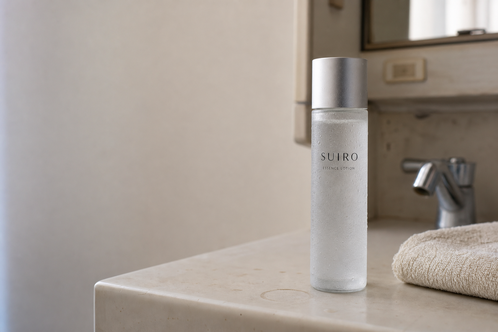
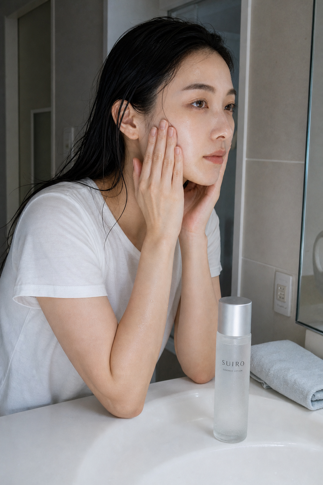

MORNING / 07:00
朝の洗面台で。
少量を手に取り、顔へなじませます。続けてもう一度、少量を取ります。

ESSENCE LOTION / 150mL
商品情報
SUIRO ESSENCE LOTION
水のように軽い使用感。
少量ずつ、2回に分けてなじませます。

A QUIET ROUTINE
朝と夜。時間は違っても、SUIROの使い方は同じです。手のひらへ少量を取り、顔へなじませる。その流れをもう一度繰り返します。

水のように軽い使用感を、朝と夜に。
架空商品のため、注文・決済には進みません。
CHAPTER 01
MORNING / 07:00
少量を手に取り、顔へなじませます。続けてもう一度、少量を取ります。

NIGHT / 22:00
朝と同じく、少量を2回に分けてなじませます。
時間帯で手順を変えず、朝と夜に同じ流れを繰り返します。
このページは非販売のデモです。
BEFORE YOU BEGIN

「どのくらい、どの順番で使うか」を、毎日の所作として整理しました。
一日の始まりと終わりに使います。
手のひらへ少量を取ってなじませます。
同じ流れを2回に分けて行います。
ONLY CONFIRMED FACTS
このページでは、確認できている商品情報だけを掲載しています。

実購入はできません。
WATER-LIKE FEEL
水のように軽い使用感の化粧水を、2回に分けてなじませます。


少量
なじませる
もう一度
MOTION 01 / BEGIN
ボトルと手元を近くで見る短い映像です。
MORNING AND NIGHT
少量 → なじませる
もう一度、少量 → なじませる
少量 → なじませる
もう一度、少量 → なじませる

MOTION 02 / TRANSITION
朝と夜のルーティンをつなぐ短い映像です。
CHAPTER 02
FOUR ACTIONS
以下の映像は、確認済みの使い方の所作を示すデモ素材です。
非送信のデモフォームです。
まず、少量を手に取ります。
手のひらで顔へなじませます。
2回目も少量を手に取ります。
2回目も顔へなじませます。
少量を2回に分ける一連の所作が完了します。
朝と夜に同じ流れを行います。
A SIMPLE RECAP
注文は送信されません。
MOTION 09 / DETAILS
商品外観を確認するための短い映像です。
CONFIRMED INFORMATION
SUIRO
ESSENCE LOTION
FAQ
朝と夜に使います。
少量を2回に分けてなじませます。
水のように軽い使用感です。
無香料です。
150mL、3,520円（税込）です。
購入できません。SUIROは架空商品で、このページはデザイン確認用のデモです。
ORDER FORM / DEMO